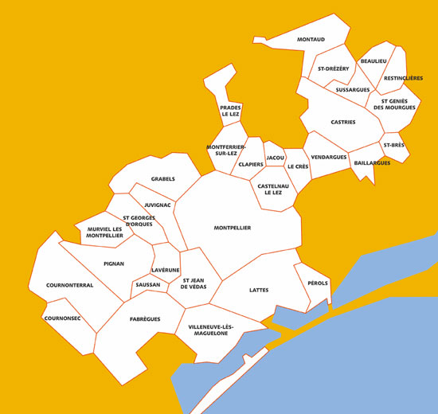

Je m'appelle julien Beugnet, je suis né à Lille en févirer 2002. En 2020 j'ai obtenu mon Bac ES, puis je suis partis en Licence Math Info. J'ai redoublé de peu la 1ère année puis au cours de l'été entre les deux années j'ai commencé à travailler comme plongeur /commis de cuisine. Au cours de ma 2nde année j'ai arrété d'aller en cours pour travailler à plein temps. Après 1 ans et demis de travail, j'ai décidé de reprendre les cours mais en informatique pur via l'IPSSI où j'ai fait ma rentré en septembre 20224 tout en continuant de travailler en restauration.
Depuis 2024 je me suis mis au skate a la base pour me promener puis récemment j'ai commencé à en faire de manière sérieuse et régulière à en faire mais du côté freestyle notamment grâce au Rodnney Mullen et ses tricks qui m'ont tomber dans le skate. Aller voir ses compilations (notamment : celle ci )
| plus |
| moins |
J'aimerais travailler dans le developpement de jeu vidéo dans les prochaines années. Sinon me former pour continuer à travailler dans la restauration et travailler dans un pays étranger.
Mtp
Je ne donnerai aucune info sur mes contacts